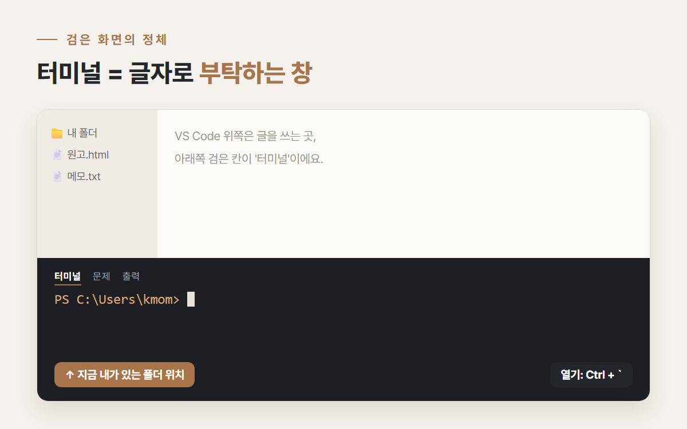
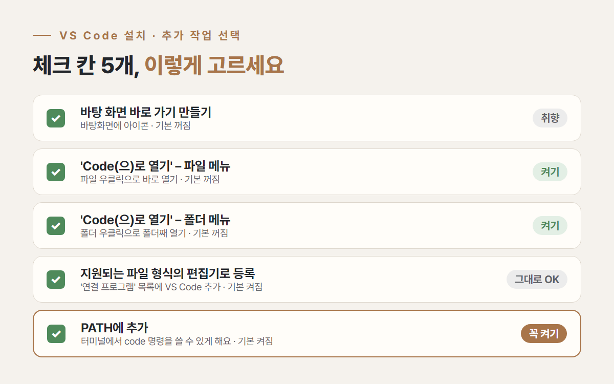
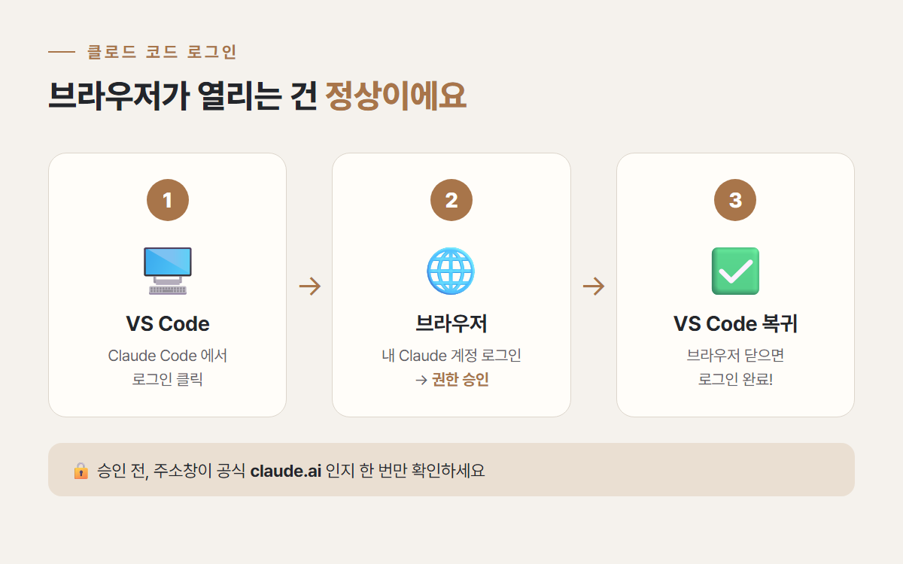
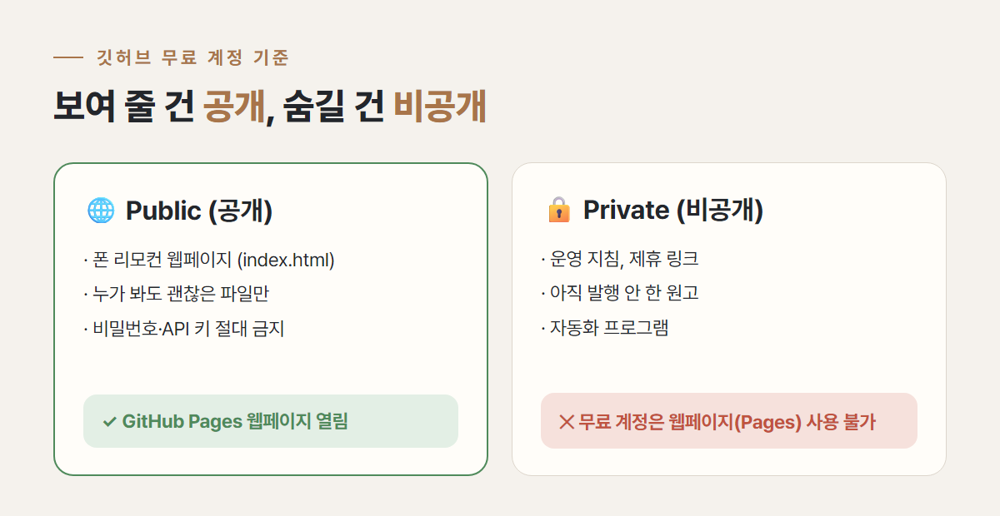
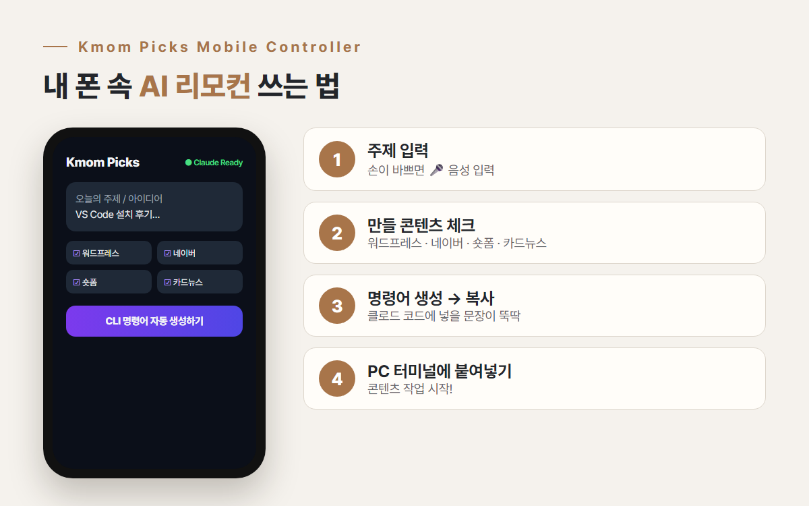

46세 워킹맘의 AI 자동화 도전기 · 시리즈 1탄
여러분, 처음 검은 화면 띄웠을 때 진짜 식은땀 났잖아요?
저는 그 화면을 보자마자
'이건 개발자들 세상이구나' 하고 노트북을 덮을 뻔했어요.
저는 46살, 회사 다니면서 아이 키우는 워킹맘이에요.
2년 동안 내돈내산 리뷰를 쌓아 온 케이맘픽스를 덜 힘들게 운영하고 싶어서,
퇴근 후 시간을 쪼개 AI 자동화를 배우기 시작했어요.
이 글은 VS Code 클로드 코드 설치부터 깃허브 설정 실수, 스마트폰 리모컨 완성까지
제가 실제로 해 본 것만 솔직하게 적은 기록이에요.
📌 바쁘신 분들을 위한 한눈에 보기
VS Code(Visual Studio Code)는 마이크로소프트가 무료로 배포하는 편집기예요.
열어 보니 메모장에 폴더 목록과 버튼 몇 개가 붙은 모양이었어요.
진짜 무서웠던 건 화면 아래쪽의 검은 창, 터미널이었어요.
커서만 깜빡이고, 뭘 쳐야 하는지 아무 안내가 없었거든요.

그런데 써 보니 터미널은 마우스 대신 글자로 부탁하는 창이었어요.
제가 직접 친 명령은 손에 꼽을 만큼 적었고, 대부분은 클로드 코드가 대신 해 줬어요.
💡 터미널 여는 법
상단 메뉴 터미널 → 새 터미널, 또는 단축키 Ctrl + `(Esc 아래 키).
맨 앞의 PS C:\Users\...>는 '지금 내가 있는 폴더'를 알려 주는 표시예요.
공식 사이트(code.visualstudio.com)에서 Windows용 설치 파일을 받아 실행하면,
중간에 '추가 작업 선택' 화면이 나와요.
저는 여기서 체크박스 다섯 개를 보고 한참 멈춰 있었어요.
번역 말투라 더 어렵게 느껴지더라고요.

'상황에 맞는 메뉴'는 그냥 마우스 오른쪽 클릭 메뉴예요.
알고 나니 대부분 '편하게 해 줄까요?'라는 질문이었어요.
⚠️ 회사 PC라면
프로그램 설치 규정이 있을 수 있어요. 사내 IT 정책을 먼저 확인하세요.
클로드 코드(Claude Code)는 AI 클로드에게 내 컴퓨터 폴더 안에서 파일을 만들고 고치도록 맡기는 도구예요.
쓰려면 Claude 유료 요금제나 API 결제가 필요해서, 저는 요금제부터 확인했어요.
로그인을 누르면 VS Code가 아니라 인터넷 브라우저가 새로 열려요.
저는 '뭘 잘못 눌렀나?' 싶었는데, 원래 이렇게 진행되는 거였어요.

한 번 승인하면 다음부터는 다시 묻지 않았어요.
💡 안전 습관 하나
승인 버튼을 누르기 전에 주소창이 공식 claude.ai(또는 anthropic.com)인지 한 번만 확인하세요.
클로드 코드와 함께 스마트폰에서 열어 볼 작은 웹페이지를 만들었어요.
이걸 인터넷 주소로 띄우려고 깃허브(GitHub)의 무료 웹페이지 기능, GitHub Pages를 쓰기로 했죠.
저장소를 만들 때 Public(공개)과 Private(비공개) 중 하나를 고르래요.
블로그 전략이 보일까 봐 겁이 나서 고민 없이 Private를 골랐어요.
그런데 기대했던 리모컨 화면 대신
색깔도 버튼 모양도 없이 글자만 위아래로 줄줄이 나열된 화면이 보였어요.
공개·비공개 설정을 이리저리 헷갈리며 한참 헤맨 끝에,
저장소를 공개로 바꾸고 Pages를 다시 설정하니 그제야 제대로 된 화면이 나왔어요.
💡 글자만 나열돼 보인다면
웹페이지의 글자는 불러왔는데 디자인 파일(CSS·스크립트)을 못 불러왔을 때 흔히 생기는 모습이에요.
주소가 아이디.github.io/저장소이름 형태인지 확인하고, 설정 직후라면 몇 분 뒤 새로고침해 보세요.
전부 공개로 바꾸는 건 답이 아니었어요. 그래서 이렇게 나눴어요.

⚠️ 공개 저장소에는 절대 넣지 마세요
비밀번호, API 키, 블로그 관리자 정보. 공개 저장소의 파일은 누구나 볼 수 있어요.
그렇게 띄운 페이지가 제 'Kmom Picks Mobile Controller'예요.
기능은 단순해요.

💡 터미널에서 claude 명령을 쓰려면
VS Code 확장만 설치하면 대화 창에서만 쓸 수 있어요. 터미널에 claude를 입력해 쓰려면 클로드 코드 본체(CLI)를 따로 설치해야 해요.
Windows PowerShell에서 irm https://claude.ai/install.ps1 | iex 를 입력하고, 새 터미널에서 claude --version으로 확인하면 돼요.
휴대폰 브라우저 메뉴에서 '홈 화면에 추가'를 누르면 앱 아이콘처럼 생겨요.
아이 재우고 누워서 떠오른 주제를 바로 적어 둘 수 있게 됐어요.
솔직히 리모컨이 PC를 대신 켜 주지는 않아요.
그래도 내 손으로 만든 버튼을 눌러 내 일이 시작된다는 게 이렇게 짜릿할 줄 몰랐어요.
'파일은 분명 잘 올라가 있는데, 왜 웹페이지가 제대로 안 보이지?'
글자만 나열된 화면을 몇 번이나 새로고침하다가 궁금해져서 찾아봤어요.
GitHub Pages는 저장소의 파일을 그대로 웹사이트로 보여 주는 기능이에요.
무료 계정(GitHub Free)에서는 공개 저장소에서만 쓸 수 있고, 비공개로 쓰려면 유료 요금제가 필요해요.
웹사이트는 원래 누구나 보는 것이니, 무료로는 '공개'가 전제라고 이해하면 쉬웠어요.
| ❌ 흔한 오해 | ⭕ 실제 |
|---|---|
| 비공개 저장소도 Pages를 켜면 나만 보는 웹페이지가 생긴다 | 무료 계정은 비공개 저장소로 Pages를 켤 수 없어요 |
| 저장소 하나를 공개하면 내 계정 전체가 공개된다 | 공개·비공개는 저장소마다 따로 정해요 |
| 웹페이지만 보이고 저장소 안 파일은 숨겨진다 | 공개 저장소는 안의 파일 전체를 누구나 볼 수 있어요 |
새 저장소를 만들 때 딱 한 가지만 물어봐요.
"이 파일을 모르는 사람이 봐도 괜찮을까?"
괜찮으면 Public, 조금이라도 망설여지면 Private.
'PATH에 추가'는 꼭 켜 두고, 'Code(으)로 열기' 두 항목은 기본으로 꺼져 있으니 직접 켜 두면 파일과 폴더를 우클릭으로 바로 열 수 있어 편해요. 바탕 화면 아이콘은 취향이고, '지원되는 파일 형식의 편집기로 등록'은 기본으로 켜져 있는데 그대로 둬도 괜찮아요.
네. 브라우저에서 Claude 계정으로 로그인하고 승인을 누르면 VS Code가 로그인 상태가 돼요. 주소가 공식 도메인인지 확인하세요.
무료 계정에서는 안 돼요. GitHub Pages는 무료 계정에서 공개 저장소에서만 쓸 수 있어요. 숨길 파일은 다른 비공개 저장소에 두고, 웹페이지 파일만 공개 저장소에 두는 방법을 권해요.
저는 코딩을 배운 적 없이 시작했어요. 원하는 걸 한국어로 설명하면 클로드 코드가 파일을 만들어 줬고, 저는 결과를 확인하고 수정할 점을 말하는 역할이었어요. 다만 유료 요금제가 필요하고, 결과물은 꼭 직접 확인해야 해요.
한 줄로 정리하면, 무서운 건 검은 화면이 아니라 '모른다'는 막막함이었어요.
체크박스 하나, 승인 버튼 하나씩 뜻을 알고 나니 생각보다 할 만했답니다.
시리즈 2탄에서는 이 환경을 회사 PC와 집 PC에서 똑같이 이어 쓰려다 만난 빨간 에러와,
그걸 한 줄씩 풀어낸 이야기를 정리할게요.
여러분은 처음 검은 화면을 띄웠을 때 어떤 기분이셨나요? 댓글로 들려주세요 💬
이 글은 협찬이나 제휴 링크 없이 직접 경험한 내용을 바탕으로 작성했습니다. (대가 없음)